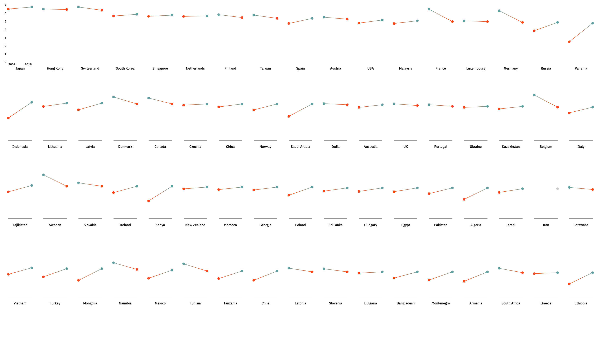
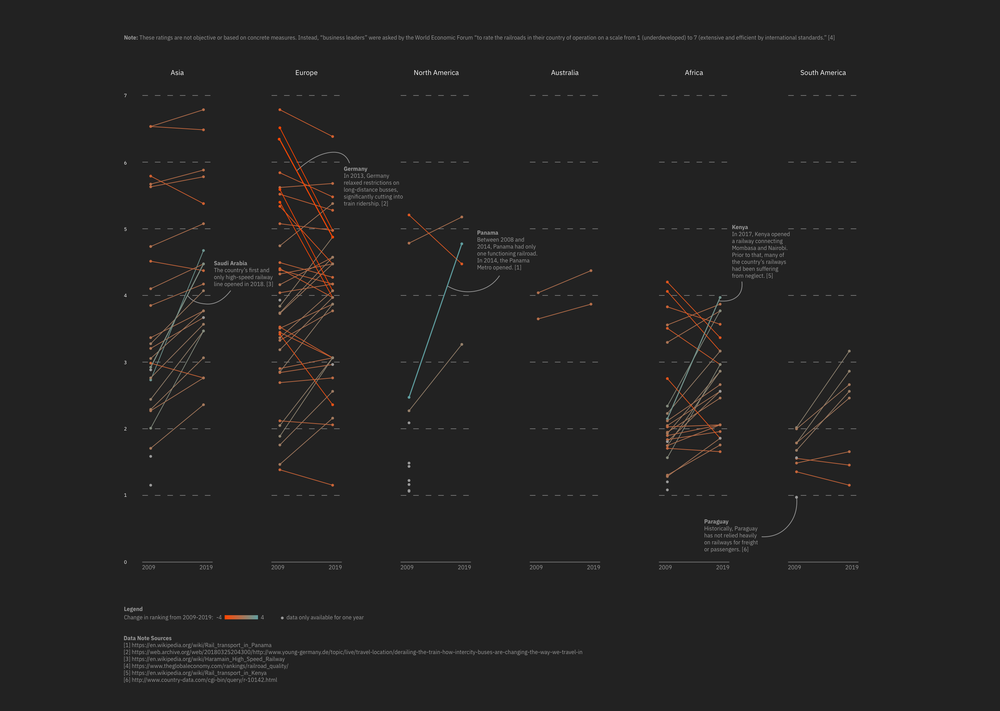
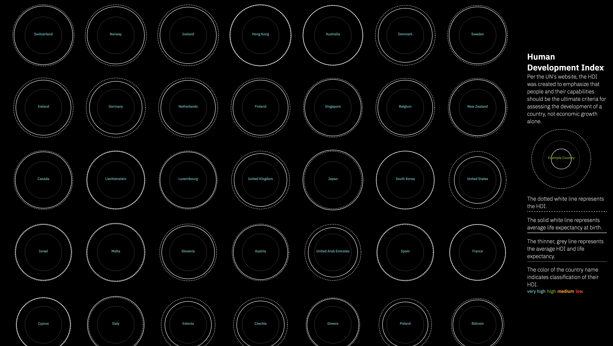
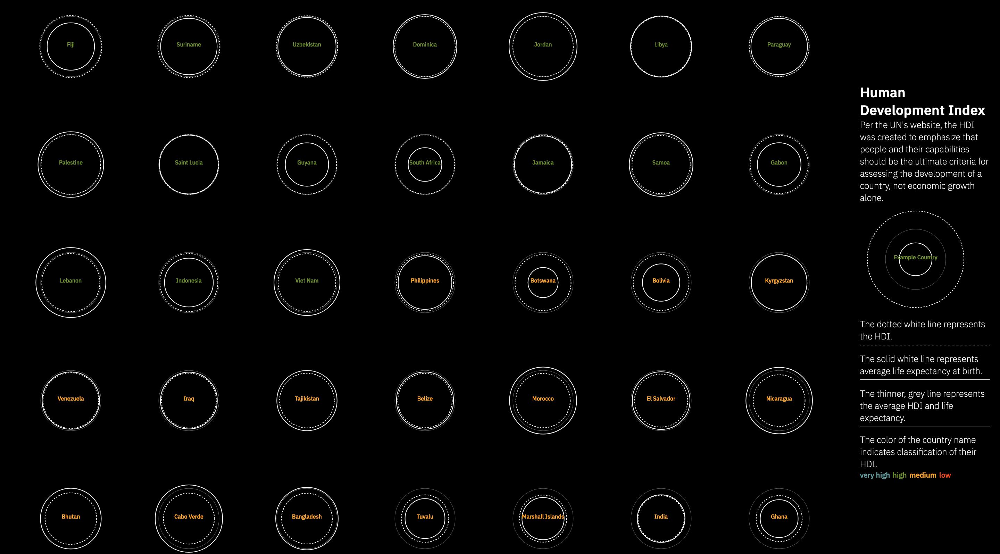

Data Visualization Explorations
Various personal explorations in bringing data to life visually using D3.js and other tools. With these, I'm usually sacrificing polish or completeness and prioritizing learning a new skill (e.g., scrollytelling or interpolating colors).

Line charts showing how production of fish and shrimp has skyrocketed in recent years. Data cleaning done in Google Sheets and charts created and refined by hand in Figma.

A marimekko chart, started in D3 and refined by hand, showing prison population by state and sentence length, highlighting the "lifers" in each state

Visualization using small multiples to explore differences in railroad infrastructure quality for different countries.">
Visualization using a grouped of similarly laid out parallel line plots to explore differences in railroad infrastructure quality for different continents.">A visualization using parallel plot small multiples to explore differences in railroad infrastructure quality for different countries and another version focusing more on trends across continents instead of individual countries.


An artistic visualization using nested circles to represent life expectancy and the UN's Human Development Index for different countries.